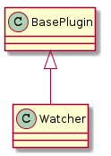

This is a plugin for Composites. The plugin creates as its product a singleton composite into which components are added. To specify the components the configuration-file will need a cascade of sections.
- In the APE section, the name of the section with information for this plugin needs to be listed (as is the case for all plugins).
- In the section for the plugin the sections with information for the components needs to be added
- The section also needs an identifier for the singleton so it can be re-used later in the operation if needed

The Watcher is a bundle of Watcher, Query, Connection, and FileStorage.
configuration = """
[{0}]
#
""".format(SECTION,
TOTAL_OPTION,
INTERVAL_OPTION,
VERBOSE_OPTION)
The help-sections.
sections = OrderedDict()
sections['name'] = '{bold}sleep{reset} -- a countdown timer that blocks until time is over'
sections['description'] = '{bold}sleep{reset} is a verbose no-op (by default) meant to allow the insertion of a pause in the execution of the APE. At this point all calls to sleep will get the same configuration.'
sections['configuration'] = configuration
sections['see also'] = 'EventTimer, RelativeTime, AbsoluteTime'
sections['options'] = """
The configuration options --
{bold}end{reset} : an absolute time given as a time-stamp that can be interpreted by `dateutil.parser.parse`. This is for the cases where you have a specific time that you want the sleep to end.
{bold}total{reset} : a relative time given as pairs of '<amount> <units>' -- e.g. '3.4 hours'. Most units only use the first letter, but since `months` and `minutes` both start with `m`, you have to use two letters to specify them. The sleep will stop at the start of the sleep + the total time given.
{bold}interval{reset} : The amount of time beween reports of the time remaining (default = 1 second). Use the same formatting as the `total` option.
{bold}verbose{reset} : If True (the default) then report time remaining at specified intervals while the sleep runs.
One of {bold}end{reset} or {bold}total{reset} needs to be specified. Everything else is optional.
"""
sections['author'] = 'ape'